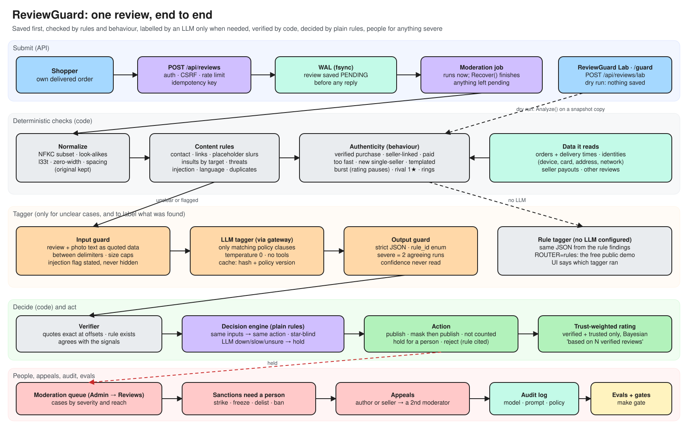

What happens to one review
ReviewGuard checks every review on MyFlipKart.com, a fictional store. Pick a review and follow it step by step: saved first, checked by rules and behaviour, labelled by an LLM only when needed, verified by code, decided by plain rules, and handed to people for anything severe.
The rules of the road
Never lose a review
Saved through the write-ahead log (fsync) before any reply, with an idempotency key; a crash is recovered exactly once.
Honest is always published
Content rules are applied the same way at 1★ and 5★. Honest negative reviews are always shown and counted.
Behaviour decides what counts
Verified purchase, links to seller staff, paid reviews, bursts, rival attacks and rings; never sentiment.
The LLM labels, code decides
Quoted input, matching rules only, strict JSON, two runs for severe labels, a verifier, and a fail-safe hold.
People decide anything severe
Strikes, freezes, delisting and bans need a person. Appeals go to a second moderator. Everything is audited.
Gated by evals
Auto-reject precision ≥ 99%, zero honest negatives hidden, zero untrusted reviews counted, zero false flags on a viral day.
Architecture

Source: reviewguard.excalidraw (open it at excalidraw.com) · ReviewGuard architecture page · all systems